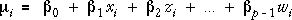
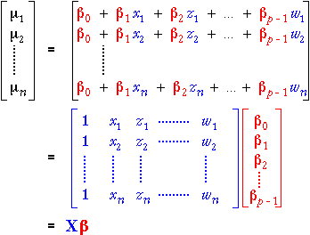

Response mean for GLM
The mean response for the i'th observation in a general linear model depends linearly on the values of the explanatory variables, xi , zi , ..., wi ,

We can again use matrices to express the vector of all n response means as the product of two matrices,

Observe that the only differences from the matrix formulation of the simple linear model are extra columns in the X matrix and the corresponding extra entries in the vector of parameters.
The diagram below illustrates this matrix multiplication for a linear model with two explanatory variables for n = 12 observations.
Again click on rows to see the values that are combined in the matrix multiplication to form each mean.
The general linear model
To fully express the general linear model in matrix notation, we add a vector, ε, of independent normally distributed errors,

We now illustrate the matrix formulation of the general linear model with a numerical example.
Water Usage in Production Plant
A production plant cost-control engineer is responsible for cost reduction. One of the costly items in his plant is the amount of water used by the production facilities each month. He decided to investigate water usage by collecting measurements of his plant's water usage and other variables in 17 months.
| Response | ||
|---|---|---|
| Water | Monthly water usage (gallons) | |
| Explanatory variables | ||
| Temperature | Average monthly temperature (°F) | |
| Production | Amount of production (M pounds) | |
| Days | Number of plant operating days in the month | |
| Workers | Number of persons on the monthly plant payroll | |
A reasonable model for the water consumption in month i specifies that it is linearly affected by the four explanatory variables,

This model is expressed below in matrix notation with the actual values of the explanatory variables inserted into the X matrix.
We assume that that observed water usages in the 17 months come from this model.